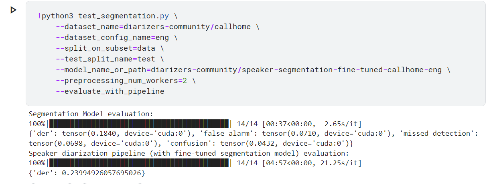
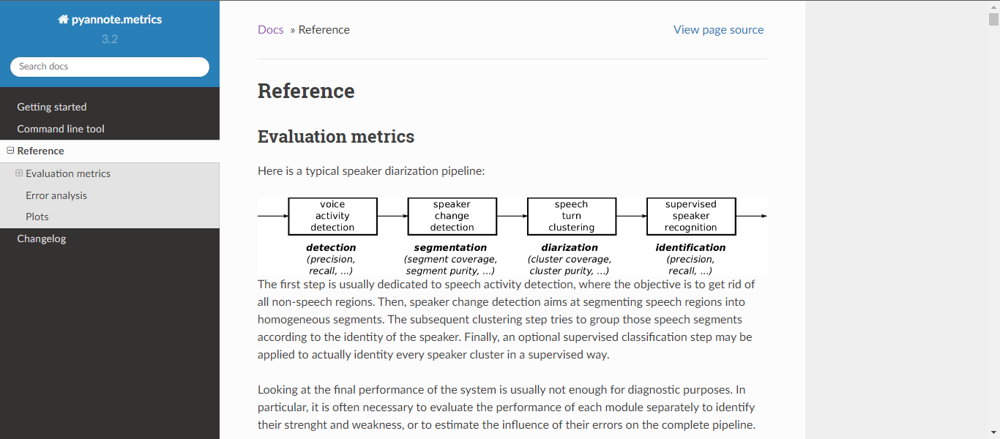
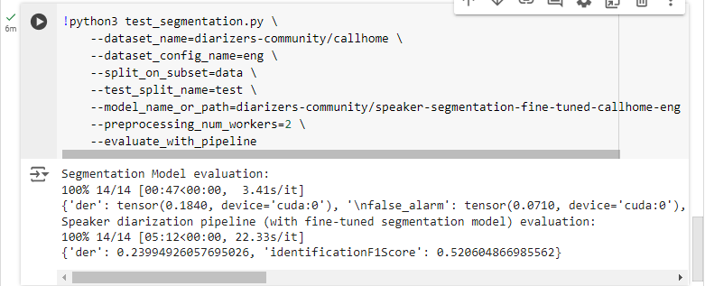

Evaluating the Fine-Tuned Model
The script test_segmentation.py can be used to evaluate a fine-tuned model on a diarization dataset.
In the following example, we evaluate the fine-tuned model from the test split of the CallHome English Dataset.
python3 test_segmentation.py \
--dataset_name=diarizers-community/callhome \
--dataset_config_name=eng \
--split_on_subset=data \
--test_split_name=test \
--model_name_or_path=diarizers-community/speaker-segmentation-fine-tuned-callhome-eng \
--preprocessing_num_workers=2 \
--evaluate_with_pipeline \
Sample Output

The output above is the default output that can be obtained using the default Evaluation Script.
This documentation further explores the evaluation process adding more to the metrics that can be measured during this process and highlighting the editing.
Considering there are many metrics that can be obtained throughout the diarization process as documented in the pyannote.audio.metrics documentation.

In this documentation, we'll focus on the Segmentation Precision, Segmentation Recall and Identification F1 Score.
Segmentation Precision and Recall
Imports
Segment: Speaker segmentation is the process of dividing an audio recording into segments based on the changing speakers’ identities. The goal of speaker segmentation is to determine the time boundaries where the speaker changes occur, effectively identifying the points at which one speaker’s speech ends, and another’s begins. That said, a Segment is a data structure with start and end time that will then be placed in a Timeline
Timeline: A data structure containing various segments. Reference timelines are provided in the ground truth and are compared against the predicted timelines to calculate segmentation precision and segmentation recall
from pyannote.core import SlidingWindow, SlidingWindowFeature, Timeline, Segment
from pyannote.metrics import segmentation, identification
Testing the Segmentation Model
Initialization
class Test : The Segmentation Model test implementation is carried out within the Test Class found in the Test.py file in src/diarizers
Parameters
test_dataset: The test dataset to be used. In this example, it will be the test split on the Callhome English dataset.
model (SegmentationModel): The model is the finetuned model trained by the train_segmentation.py script.
step (float, optional): Steps between successive generated audio chunks. Defaults to 2.5.
metrics: For this example, the metrics segmentation_precision,segmentation_recall,recall_value,precision_value and count have been added for the purpose of calculating the segmentation recall and precision of the Segmentation Model.
class Test:
def __init__(self, test_dataset, model, step=2.5):
self.test_dataset = test_dataset
self.model = model
(self.device,) = get_devices(needs=1)
self.inference = Inference(self.model, step=step, device=self.device)
self.sample_rate = test_dataset[0]["audio"]["sampling_rate"]
# Get the number of frames associated to a chunk:
_, self.num_frames, _ = self.inference.model(
torch.rand((1, int(self.inference.duration * self.sample_rate))).to(self.device)
).shape
# compute frame resolution:
self.resolution = self.inference.duration / self.num_frames
self.metrics = {
"der": DiarizationErrorRate(0.5).to(self.device),
"confusion": SpeakerConfusionRate(0.5).to(self.device),
"missed_detection": MissedDetectionRate(0.5).to(self.device),
"false_alarm": FalseAlarmRate(0.5).to(self.device),
"segmentation_precision": segmentation.SegmentationPrecision(),
"segmentation_recall": segmentation.SegmentationRecall(),
"recall_value":0,
"precision_value": 0,
"count": 0,
}
Predict function
This function makes a prediction on a dataset row using pyannote inference object.
def predict(self, file):
audio = torch.tensor(file["audio"]["array"]).unsqueeze(0).to(torch.float32).to(self.device)
sample_rate = file["audio"]["sampling_rate"]
input = {"waveform": audio, "sample_rate": sample_rate}
prediction = self.inference(input)
return prediction
Compute Ground Truth Function
This function converts a dataset row into the suitable format for evaluation as the ground truth.
Returns: numpy array with shape (num_frames, num_speakers).
def compute_gt(self, file):
audio = torch.tensor(file["audio"]["array"]).unsqueeze(0).to(torch.float32)
sample_rate = file["audio"]["sampling_rate"]
audio_duration = len(audio[0]) / sample_rate
num_frames = int(round(audio_duration / self.resolution))
labels = list(set(file["speakers"]))
gt = np.zeros((num_frames, len(labels)), dtype=np.uint8)
for i in range(len(file["timestamps_start"])):
start = file["timestamps_start"][i]
end = file["timestamps_end"][i]
speaker = file["speakers"][i]
start_frame = int(round(start / self.resolution))
end_frame = int(round(end / self.resolution))
speaker_index = labels.index(speaker)
gt[start_frame:end_frame, speaker_index] += 1
return gt
Convert to Timeline
This function creates a Timeline using data and labels passed as parameters and converted into Segments. Required in order to calculate Segmentation Precision and Recall.
def convert_to_timeline(self, data, labels):
timeline = Timeline()
for speaker_index, label in enumerate(labels):
segments = np.where(data[:, speaker_index] == 1)[0]
if len(segments) > 0:
start = segments[0] * self.resolution
end = segments[0] * self.resolution
for frame in segments[1:]:
if frame == end / self.resolution + 1:
end += self.resolution
else:
timeline.add(Segment(start, end + self.resolution))
start = frame * self.resolution
end = frame * self.resolution
timeline.add(Segment(start, end + self.resolution))
return timeline
Compute Metrics on File
Function that computes metrics for a dataset row passed into it. This function is run iteratively until the entire dataset has been processed.
def compute_metrics_on_file(self, file):
gt = self.compute_gt(file)
prediction = self.predict(file)
sliding_window = SlidingWindow(start=0, step=self.resolution, duration=self.resolution)
labels = list(set(file["speakers"]))
reference = SlidingWindowFeature(data=gt, labels=labels, sliding_window=sliding_window)
# Convert to Timeline for SegmentationPrecision
reference_timeline = self.convert_to_timeline(gt, labels)
prediction_timeline = self.convert_to_timeline(prediction.data, labels)
for window, pred in prediction:
reference_window = reference.crop(window, mode="center")
common_num_frames = min(self.num_frames, reference_window.shape[0])
_, ref_num_speakers = reference_window.shape
_, pred_num_speakers = pred.shape
if pred_num_speakers > ref_num_speakers:
reference_window = np.pad(reference_window, ((0, 0), (0, pred_num_speakers - ref_num_speakers)))
elif ref_num_speakers > pred_num_speakers:
pred = np.pad(pred, ((0, 0), (0, ref_num_speakers - pred_num_speakers)))
pred = torch.tensor(pred[:common_num_frames]).unsqueeze(0).permute(0, 2, 1).to(self.device)
target = (torch.tensor(reference_window[:common_num_frames]).unsqueeze(0).permute(0, 2, 1)).to(self.device)
self.metrics["der"](pred, target)
self.metrics["false_alarm"](pred, target)
self.metrics["missed_detection"](pred, target)
self.metrics["confusion"](pred, target)
# Compute precision
self.metrics["precision_value"] += self.metrics["segmentation_precision"](reference_timeline, prediction_timeline)
self.metrics["recall_value"] += self.metrics["segmentation_recall"](reference_timeline, prediction_timeline)
self.metrics["count"] += 1
Compute Metrics
Using all the functions above, the metrics for the Segmentation Model can then be computed and returned at once as shown below.
Further information on metrics that extracted from the Segmentation model can be found here
def compute_metrics(self):
"""Main method, used to compute speaker diarization metrics on test_dataset.
Returns:
dict: metric values.
"""
for file in tqdm(self.test_dataset):
self.compute_metrics_on_file(file)
if self.metrics["count"] != 0:
self.metrics["precision_value"] /= self.metrics["count"]
self.metrics["recall_value"] /= self.metrics["count"]
return {
"der": self.metrics["der"].compute(),
"false_alarm": self.metrics["false_alarm"].compute(),
"missed_detection": self.metrics["missed_detection"].compute(),
"confusion": self.metrics["confusion"].compute(),
"segmentation_precision": self.metrics["precision_value"],
"segmentation_recall": self.metrics["recall_value"],
}
Testing the Speaker Diarization (With the Fine-tuned Segmentation Model)
The Fine-tuned segmentation model can be run in the Speaker Diarization Pipeline by calling from_pretrained and overwriting the segmentation model with the fine-tuned model. Code can be found in the Test.py script.
pipeline = Pipeline.from_pretrained("pyannote/speaker-diarization-3.1")
pipeline._segmentation.model = model
Initialization
The class TestPipeline will be implementing and testing the Speaker Diarization Pipeline with the finetuned segmentation model.
Parameters
pipeline: Speaker Diarization pipeline
test_dataset: Data to be tested. In this example, it is data from the Callhome English dataset.
metrics: Since pyannote.metrics does not offer Identification F1-score, we'll use the Precision and Recall to calculate the identificationF1Score
class TestPipeline:
def __init__(self, test_dataset, pipeline) -> None:
self.test_dataset = test_dataset
(self.device,) = get_devices(needs=1)
self.pipeline = pipeline.to(self.device)
self.sample_rate = test_dataset[0]["audio"]["sampling_rate"]
# Get the number of frames associated to a chunk:
_, self.num_frames, _ = self.pipeline._segmentation.model(
torch.rand((1, int(self.pipeline._segmentation.duration * self.sample_rate))).to(self.device)
).shape
# compute frame resolution:
self.resolution = self.pipeline._segmentation.duration / self.num_frames
self.metrics = {
"der": diarization.DiarizationErrorRate(),
"identification_precision": identification.IdentificationPrecision(),
"identification_recall": identification.IdentificationRecall(),
"identification_f1": 0,
}
Compute Ground Truth
Function that reformats the Dataset Row to return the ground truth to be used for evaluation.
Parameters
file: A single Dataset Row
def compute_gt(self, file):
"""
Args:
file (_type_): dataset row.
Returns:
gt: numpy array with shape (num_frames, num_speakers).
"""
audio = torch.tensor(file["audio"]["array"]).unsqueeze(0).to(torch.float32)
sample_rate = file["audio"]["sampling_rate"]
audio_duration = len(audio[0]) / sample_rate
num_frames = int(round(audio_duration / self.resolution))
labels = list(set(file["speakers"]))
gt = np.zeros((num_frames, len(labels)), dtype=np.uint8)
for i in range(len(file["timestamps_start"])):
start = file["timestamps_start"][i]
end = file["timestamps_end"][i]
speaker = file["speakers"][i]
start_frame = int(round(start / self.resolution))
end_frame = int(round(end / self.resolution))
speaker_index = labels.index(speaker)
gt[start_frame:end_frame, speaker_index] += 1
return gt
Predict Function
def predict(self, file):
sample = {}
sample["waveform"] = (
torch.from_numpy(file["audio"]["array"])
.to(self.device, dtype=self.pipeline._segmentation.model.dtype)
.unsqueeze(0)
)
sample["sample_rate"] = file["audio"]["sampling_rate"]
prediction = self.pipeline(sample)
# print("Prediction data: ", prediction.data )
return prediction
Compute on File
Function that calculates the f1 score of a file(Dataset Row) using the precision and recall. It also calculates the der(Diarization Error rate) and can be edited to extract more evaluation metrics such as Segmentation Purity and Segmentation Coverage.
For the purpose of this demonstration, the latter two were not obtained. Details about Segmentation Coverage and Segmentation Purity can be obtained here.
def compute_metrics_on_file(self, file):
pred = self.predict(file)
gt = self.compute_gt(file)
sliding_window = SlidingWindow(start=0, step=self.resolution, duration=self.resolution)
gt = SlidingWindowFeature(data=gt, sliding_window=sliding_window)
gt = self.pipeline.to_annotation(
gt,
min_duration_on=0.0,
min_duration_off=self.pipeline.segmentation.min_duration_off,
)
mapping = {label: expected_label for label, expected_label in zip(gt.labels(), self.pipeline.classes())}
gt = gt.rename_labels(mapping=mapping)
der = self.metrics["der"](pred, gt)
identificationPrecision = self.metrics["identification_precision"](pred, gt)
identificationRecall = self.metrics["identification_recall"](pred, gt)
identificationF1 = (2 * identificationPrecision * identificationRecall) / (identificationRecall + identificationPrecision)
return {"der": der, "identificationF1": identificationF1}
Compute Metrics
This function iteratively calls the compute_metrics_on_file function to perform computation on all the files in the dataset.
Returns: The average values of the der(diarization error rate) and f1(F1 Score).
def compute_metrics(self):
der = 0
f1 = 0
for file in tqdm(self.test_dataset):
met = self.compute_metrics_on_file(file)
der += met["der"]
f1 += met["identificationF1"]
der /= len(self.test_dataset)
f1 /= len(self.test_dataset)
return {"der": der, "identificationF1Score": f1}
Sample Output
An example of the output as expected from the edited script.
